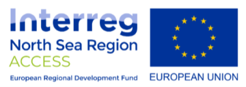

ACCESS: OP WEG NAAR SLIMME EN KOOLSTOFARME ENERGIESYSTEMEN
ACCESS staat voor 'Advancing Communities towards low-Carbon Energy Smart Systems'.

Steden zoals Mechelen staan vandaag voor belangrijke uitdagingen. De bevolking neemt toe, er is minder ruimte en fossiele energiebronnen zijn schaars, peperduur en slecht voor onze planeet. Een energietransitie is nodig. Europa is op weg naar duurzamere, gedecentraliseerde en digitale energienetwerken. Steden staan voor de taak om de lokale overgang van de opwekking en opslag van hernieuwbare energie te coördineren en tegelijkertijd de stabiliteit van het net te handhaven. Integratie tussen energiedragers (warmte, elektriciteit) is nodig om een grotere flexibiliteit en een betere efficiëntie mogelijk te maken. De Noordzeeregio (NSR) loopt voorop, aangezien veel nieuwe technologieën en bedrijfsmodellen met succes zijn gedemonstreerd. Maar naarmate de regio zich voorbereidt op de overgang, ontstaan er nieuwe uitdagingen op het gebied van bestuur, financiën en technologische keuzes.
Ook in de toekomst wil Mechelen een duurzame en klimaatneutrale stad zijn, waar het voor haar inwoners aangenaam wonen, werken en leven blijft. Daarom doen wij mee aan ACCESS, een Interreg North Sea Region project dat steden een duwtje in de rug geeft op weg naar slimme en koolstofarme energiesystemen. Dit Europees project brengt 10 partners vanuit vijf landen samen (zie verder). Samen streven ze naar een vermindering van de CO2-uitstoot met 25%, vermindering van de ontwikkelingstijd van slimme energie- en mobiliteitshubs met 30% en met 20% van de kosten.
Parking Keerdok: veel meer dan een parkeergebouw
Stad Mechelen neemt deel aan ACCESS met het project Parking Keerdok. Dat wordt niet zomaar een parkeergebouw. Naast parking en fietsenstallingen, vind je er ook een supermarkt, kantoorruimte, een daktuin, infrastructuur voor snel en traag laden van je auto, lockers om de batterij van je elektrische fiets en andere kleine apparaten in op te laden ... Maar bovenal: het wordt een lokaal, slim en duurzaam energienetwerk op gebouwniveau.
Twee daken met 419 zonnepanelen (172 kWp) zorgen voor de lokale productie van zonne-energie. Die energie wordt slim beheerd en maximaal verbruikt én gedeeld door de verschillende gebruikers in het gebouw: de supermarkt, de kantoren en laadpunten voor auto's en laadlockers. Is er energie over? De resterende energie wordt onderling herverdeeld en slim ingezet waar en wanneer ze het meeste nodig is. Zo gaat onze kostbare groene energie nooit verloren. En dat is nog maar het begin. In de toekomst hopen we dit lokale energienetwerk uit te rollen over de rest van de Keerdoksite. Ook dromen we van een Vehicle-to-grid laadinfrastructuur. Daarbij werkt je elektrische auto als een batterij op wielen. De auto laadt op aan de laadpaal, maar kan ook overtollige energie weer terug afgeven.
Partners
ACCESS brengt 10 partners vanuit vijf landen samen onder leiding van de Vlaamse Instelling voor Technologisch Onderzoek. Belgische partners: Vlaamse Instelling voor Technologisch Onderzoek, Stad Mechelen Zweedse partners: Johanneberg Science Park, Malmö Kommun, Malmö kommuns parkerings AB Deense partners: Aarhus Universitet Engelse partners: IfM Education and Consultancy Services, Forest Heath District Council & St Edmundsbury Borough Council Nederlandse partners: Gemeente Amersfoort, Energievan.nu
Geen enkele organisatie heeft de expertise of het vermogen om te experimenteren met een breed scala aan technologieën, bestuurs- en financieringsmodellen. Om deze doelstellingen te bereiken, zullen de lokale overheden Amersfoort (NL), West-Suffolk Councils (UK), Malmö (SE) en Mechelen (BE) gezamenlijk onderzoeken en demonstreren hoe schaalvoordelen kunnen worden bereikt. Voorbeelden hiervan zijn lokale energiegemeenschapskernen, peer-to-peer energiehandelsmodellen en lokale planningsinstrumenten voor samenwerking op lokaal niveau. De 4 kennispartners (Universiteit van Aarhus, Johannesberg Science Park, IfM ECS, VITO) zullen expertise en structuur bieden.
Budget
Totaal projectbudget: € 4.320.983 Bijdrage Interreg Noordzeeregio: € 1.952.992
Budget Stad Mechelen: € 495.750 Bijdrage Interreg Noordzeeregio: € 199.450
Looptijd: 01/03/2019 – 31/04/2023